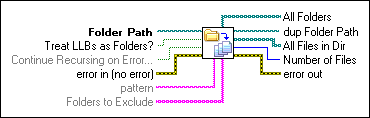
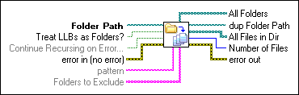

Recursive File List VI
Owning Palette: Advanced File VIs and Functions
Requires: Base Development System
Lists the contents of a folder or LLB.

 Add to the block diagram Add to the block diagram |
 Find on the palette Find on the palette |
Owning Palette: Advanced File VIs and Functions
Requires: Base Development System
Lists the contents of a folder or LLB.

| Add to the block diagram |
Find on the palette |
 |
Folder Path specifies the path to the folder or LLB whose contents you want LabVIEW to return.
|
||
 |
Treat LLBs as Folders? specifies whether to list LLBs as files or folders. If Treat LLBs as Folders? is TRUE, this VI includes LLBs in the list of folders. If Treat LLBs as Folders? is FALSE, this VI includes LLBs in the list of files. The default is FALSE. If Folder Path specifies the path to an LLB, this VI ignores this input and returns all files, including LLBs, in All Files in Dir. | ||
|
Continue Recursing on Error? specifies whether to continue recursing directories if an error occurs. If Continue Recursing on Error? is TRUE, the VI continues recursing directory contents after the error occurs. If Continue Recursing on Error? is FALSE, the VI stops recursing directory content when the error occurs. | ||
 |
error in describes error conditions that occur before this node runs. This input provides standard error in functionality. | ||
 |
pattern specifies the pattern for files for which you want to search in Folder Path. You can use the question mark character (?) to match any single character. You can use the asterisk character (*) to match any sequence of zero or more characters. For example, if you want this VI to find a list of the VIs in a folder, specify *.vi for pattern. | ||
|
Folders to Exclude specifies folder names you want to exclude during the recursion. Any folder you exclude does not appear in the All Folders array. This input is case insensitive. | ||
 |
All Folders returns a list of all subfolders, and shortcuts to folders in Folder Path. | ||
 |
dup Folder Path returns Folder Path unchanged. | ||
|
All Files in Dir returns a list of all files in Folder Path. If Treat LLBs as Folders? is set to TRUE, the list of files includes LLBs. The list also includes shortcuts to files. | ||
 |
Number of Files returns the number of files in the All Files in Dir array. | ||
 |
error out contains error information. This output provides standard error out functionality. |